先叠甲一下，下面这套流程，是我自己作为非专业者，目前跑得比较舒服的一条路径，主要面向完全不懂代码、想先把第一个产品做出来的人。不同类型的产品，可以选择不同的托管平台，工程团队也会有不同的开发规范。
这里讲的是一条足够简单、能够从零走到正式上线的方案，完全不代表唯一的标准答案。
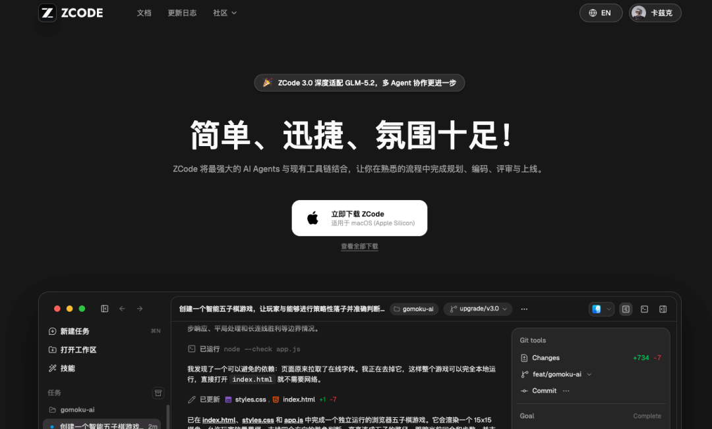
名字简短、好记、最好有一点辨识度，起名的时候顺便在微信搜一下公众号、小程序有没有同名的，在App Store和各大应用商店搜一下有没有撞车的。
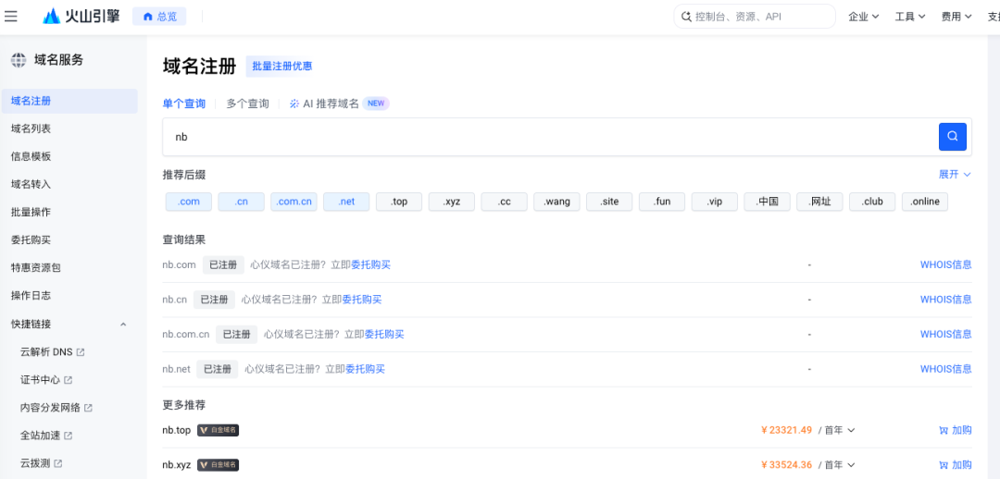
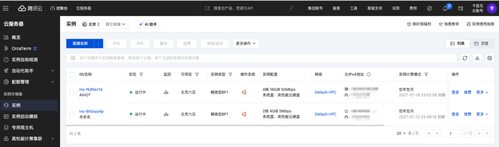
在你买服务器的那个云平台上找到“备案”入口，按指引提交身份证、域名信息、网站名称，然后等审核，一般一到两周。
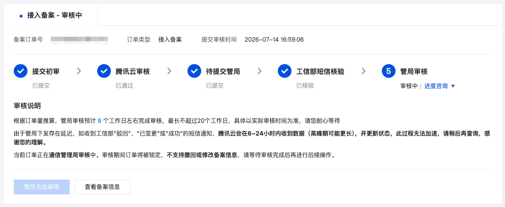
OK，准备工作全部做完了。域名有了，服务器有了，备案提交了，AI编程工具也装好了。
现在，在你的电脑上新建一个文件夹。
就这样。起一个跟你产品名字一样的文件夹名，放在你喜欢的位置。
这个文件夹，就是你接下来整个产品的家，你的所有代码、所有配置、所有文档，都会在这个文件夹里。
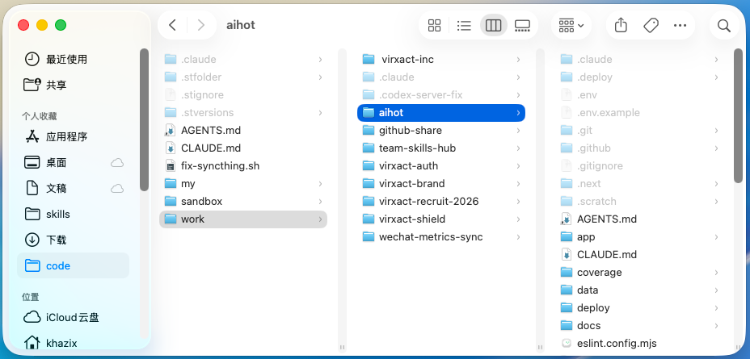
打开你第2步装好的Agent编程产品，把工作目录指向你刚才建的那个文件夹。
具体怎么操作，每个产品不太一样，但大致都是"选择一个工作目录"然后开始对话。
从这一刻开始，你的AI就驻扎在你的项目里了，它能看到你的文件，能帮你创建新文件，能帮你写代码、跑代码、调代码。
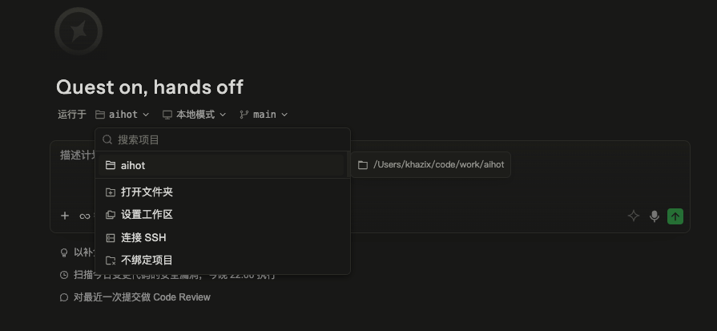
所以，可以注册一个GitHub账号（免费的），让Agent帮你连接上你的GitHub账号，然后把你的代码推到GitHub上的一个私有仓库里，注意是私有仓库，不是公开的。
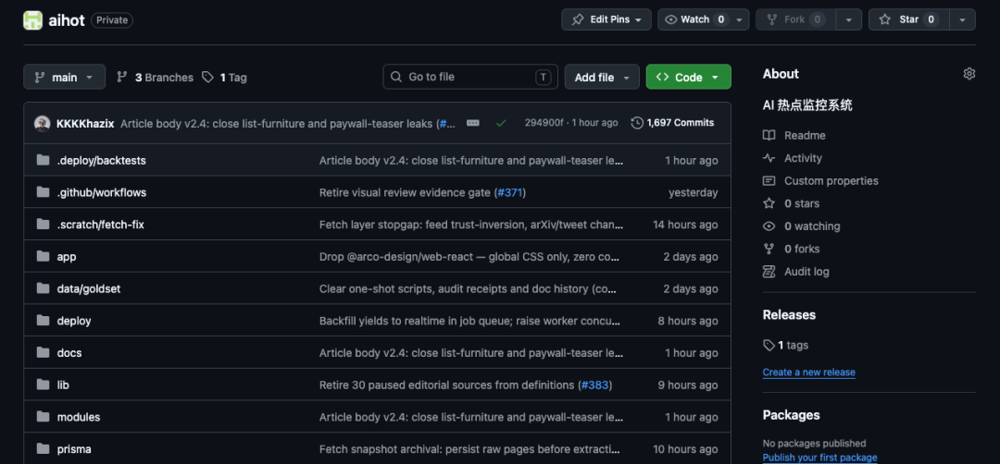
整体告诉你的Agent一句话就行了。
“初始化Git仓库，连接我的GitHub账号，创建一个私有GitHub仓库，并提交第一个初始版本。”
现在，你和Agent你们两两个的协作，正式开始。
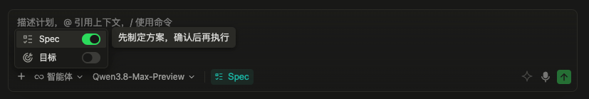
确认了Plan之后，告诉Agent开始执行。
它会自动创建项目结构、写代码、装依赖等等，你什么都不用管，看着它干活就行，过程中，它做完一块会问你要不要看看效果，或者有没有什么要调整的。
Agent开发到一定程度之后，会给你一个本地预览地址，大概率是类似localhost:3001这种。
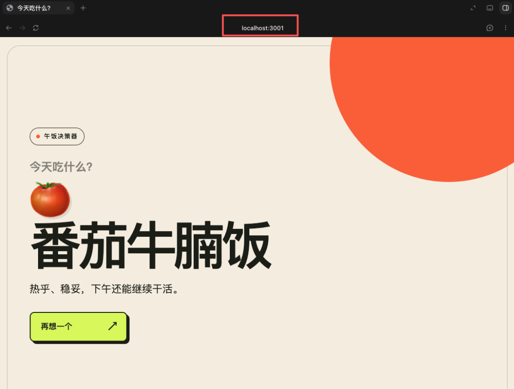
在浏览器里打开这个地址，你就能看到你的产品长什么样了。
这时候不需要着急部署上线，就在这个本地环境里，慢慢调，UI不好看就让AI改，功能逻辑不对就让AI修，改到你满意为止。
你是产品经理，AI是执行者，你觉得对就是对，你觉得不对就让它改。
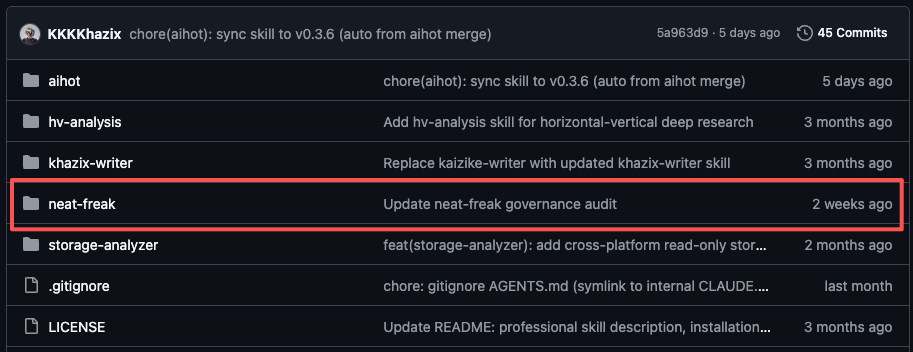
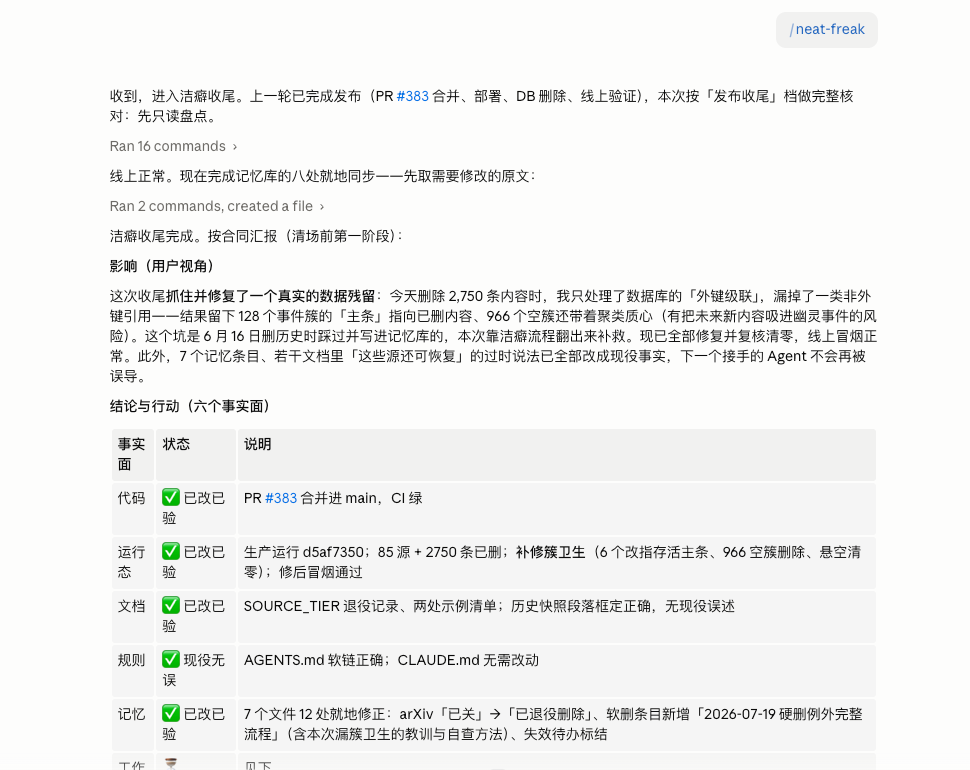
https://github.com/KKKKhazix/khazix-skills/tree/main/neat-freak
跑完洁癖.skill之后，你就结束这个对话。
以后每次开新对话，AI只需要读一遍项目里的文档，就能快速恢复上下文，知道你的项目是什么状态，接下来该干什么。
14. 跟Agent一起学一些专业名词。
到这一步，你已经有了一个能跑的产品、一个干净的代码仓库、以及一套基本的版本管理流程。
你不需要懂代码，但你需要懂一些名词，因为后面的流程会经常用到。
比如Git、分支、主分支（main）、PR、CI、测试流程等等。
可以直接让Agent给你解释。
不需要完全搞懂，但你要知道这些词在说什么，要不然后面用到的时候会一头雾水，你的流程也不规范。
15. 做一个测试流程。
Agent开发非常快，所以测试反而就很重要了。
你可以直接跟你的Agent说，帮我根据我的项目搭一套完整的测试流程。
如果你有多余的财力，可以开一个GitHub Pro会员，一个月只需要4刀。
买这个会员最核心的原因只有一个，就是它能让你在私有仓库里开启分支保护。
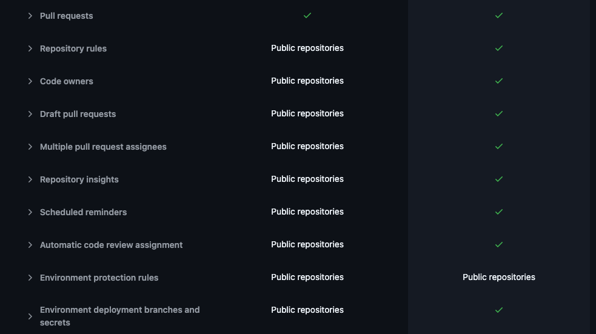
就是你设定好规则之后，任何人，包括你自己，都没办法直接往主分支上推代码，所有的改动都必须走PR，PR必须通过CI测试，测试通过了才允许合并。
没有分支保护的时候，你或者你的Agent随时可能手一抖，直接把有问题的代码推到主分支上，然后线上直接崩掉，要不然就是自己跟自己对抗，搞一套很复杂的维护脚本。
有了分支保护，这条路就被堵死了。
买完以后，可以告诉你的Agent，"我买了GitHub Pro会员，帮我开启分支保护，再给我的项目，做好全面且规范、专业的测试流程"。
当然，不买也行，就是未来项目成熟后，你想飞速迭代，就会变得麻烦点。
16. 把项目部署到你的服务器上。
新起一个对话，把你服务器的IP地址发给Agent，告诉它"我要把这个项目部署到这台服务器上"。
Agent会处理好一切，有问题的话，你登录一下你云厂商的控制台，让它自己操控浏览器去解决。
然后，你的代码就会在你的服务器上自动地7x24小时运行了。
终于，不再是本地代码了。
17. 把域名连到你的项目上。
告诉Agent你的域名是什么，让它帮你把域名指向你的服务器，然后搞个免费的证书，配好HTTPS。
这一切还是一样，不用你管，你让你的Agent干就行。
做完之后，在浏览器里输入你的域名，你应该就能看到你的产品了。
是一个真实的、全世界任何人都能访问的网址。
相信我，第一次在浏览器里输入自己的域名，看到自己搓出来的产品真的能打开，那个感觉绝对超级爽。
18. 进入无限循环的迭代流程。
上线不是终点，是起点。
从这一步开始，你的日常工作流大概率就固定了。
新建分支 → 说出你的需求 → Agent开发完成 → 跑一遍洁癖.skill统一文档 → 提交PR过CI测试 → 合并到主分支 → 部署上线。
每一次改版、每一个新功能、每一个bug修复，都走这个循环。
这个流程看着好像很复杂，但跑两三遍之后你就肌肉记忆了，而且这个流程最大的好处是安全，因为你每次改动都在分支上，不会直接动主分支，改坏了就扔掉这个分支重新来，主分支上永远是稳定能跑的版本。
也可以让你稳定的并发同时三四个任务。
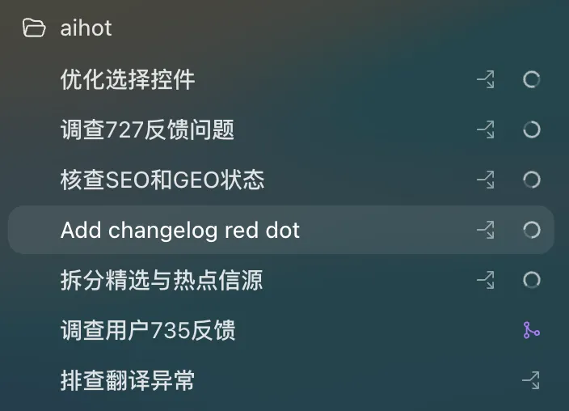
19. 可以不懂代码，但对功能的架构必须了如指掌。
这一条不是某个操作步骤，是一个原则，也是我觉得整篇文章里最重要的一段话。
你可以不会写代码，你可以让AI帮你写所有的代码，但你必须知道，你的产品到底是怎么运转的。
每一个前端页面背后对应的是哪个功能，每一个后端逻辑做了什么事情，你的数据库有哪些表，每张表里存了哪些字段，这些字段是怎么被用到的，用户点了一个按钮之后数据是怎么流转的。
这些事情你必须清楚。
因为如果你不清楚，你就丧失了对产品的判断力，AI跟你说我改好了，你连验收都验收不了。
AI给你提一个技术方案，你分不清它是在给你一个合理的建议还是在用一堆复杂的东西糊弄你。
不要让渡自己的思考。
AI是你的执行者，但你必须是那个知道这件事应该怎么做的人。
你可以不知道代码怎么写，但你必须知道逻辑怎么走。
我自己做AIHOT的时候，每一次跟AI讨论架构方案，我都会让它把方案解释清楚，为什么用这个方案不用那个方案，好处是什么坏处是什么，我听明白了，同意了，或者我认为有更好的更适合我们的方案，才会让它动手。
它要求你在完全不懂技术的前提下，去理解一个技术系统的运作方式。
但这恰恰是Vibe Coding最核心的能力。
20. 最后，一定要学一些运维知识。
产品刚上线的时候，可能就几十个人用，服务器随便扛。
但当你的用户慢慢多起来之后，有些事情就不一样了。
缓存机制、防爬虫、防DDoS、流量带宽的费用控制，这些东西在早期你完全不用管，但用户量过了一定级别之后，你不管它它就来干你。
不要被人一天刷了4000块的账单才想起来去学习，防范意识要趁早。
这个是一个巨坑，可以慢慢学。
我也还在学。
写在最后
写到这里差不多了。
如果有任何不懂、不理解的地方，完全可以把这篇文章复制，再加上你的问题，直接问Agent。
忽然想起两年前，你要搓一个能上线的产品，你得学编程、学框架、学运维、学数据库，光准备和学习的工作，就能劝退99.99%的人。
现在你需要的只有三样东西，一个想法，一个AI编程账号，一台几十块钱的服务器。
然后，就开始做。
AI会帮你解决一切。
这就是最好的。
黄金时代。
以上，既然看到这里了，如果觉得不错，随手点个赞、在看、转发三连吧，如果想第一时间收到推送，也可以给我个星标⭐～谢谢你看我的文章，我们，下次再见。
>/ 作者：卡兹克
>/ 投稿或爆料，请联系邮箱：wzglyay@virxact.com